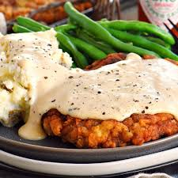

Chicken Fried Steak

Description
Crispy and tender, this chicken fried steak
is full of flavor and easy to make.
Ingredients
- 1 1/2 cups whole milk
- 2 large eggs
- 2 cups all-purpose flour
- 2 teaspoons seasoned salt
- Freshly ground black pepper
- 3/4 teaspoon paprika
- 1/4 teaspoon cayenne pepper
- 3 pounds cube steak (tenderized round
steak that's been extra tenderized)
- Kosher salt
- 1/2 cup canola or vegetable oil
- 1 tablespoon butter
Gravy
- 1/3 cup all-purpose flour
- 3 to 4 cups whole milk
- 1/2 teaspoon seasoned salt
- Freshly ground black pepper
- Mashed potatoes, for serving
Directions
- For the steak: Begin with setting up an
assembly line of dishes. Mix the milk with
the eggs in one; the flour mixed with the
seasoned salt, 1 1/2 teaspoons black pepper,
paprika and cayenne in another; and the meat
in a third. Then have one clean plate at the
end to receive the breaded meat.
- Work with one piece of meat at a time.
Sprinkle both sides with kosher salt and black
pepper, then place it in the flour mixture.
Turn to coat. Place the meat into the milk/egg
mixture, turning to coat. Finally, place it back
in the flour and turn to coat (dry mixture/wet
mixture/dry mixture). Place the breaded meat on
the clean plate, then repeat with the remaining
meat.
- Heat the oil in a large skillet over medium heat.
Add the butter. Drop in a few sprinkles of flour to
make sure it's sufficiently hot. When the butter
sizzles immediately, you know it's ready. (It should
not brown right away, if it does, the fire is too hot.)
Cook the meat, 3 pieces at a time, until the edges start
to look golden brown, about 2 minutes each side. Remove
the meat to a paper towel-lined plate and keep them warm
by covering lightly with another plate or a sheet of foil.
Repeat until all the meat is cooked.
- After all the meat is fried, pour off the grease into a
heatproof bowl. Without cleaning the skillet, return it to
the stove over medium-low heat. Add 1/4 cup of the grease
back to the skillet and allow it to heat up.
- For the gravy: When the grease is hot, sprinkle the flour
evenly over the grease. Using a whisk, mix the flour with
the grease, creating a golden-brown paste. Add more flour
if it looks overly greasy; add a little more grease if it
becomes too pasty/clumpy. Keep cooking until the roux
reaches a deep golden brown color.
- Pour in the milk, whisking constantly. Add the seasoned
salt and black pepper to taste and cook, whisking, until
the gravy is smooth and thick, 5 to 10 minutes. Be prepared
to add more milk if it becomes overly thick. Be sure to
taste to make sure gravy is sufficiently seasoned.
- Serve the meat next to a big side of mashed potatoes.
Pour gravy over the whole shebang!